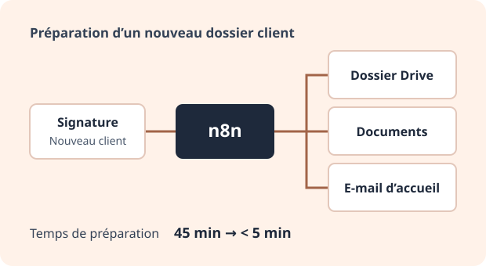

Automatisation
Relier les outils de suivi client
J’ai construit des workflows pour relier les outils utilisés par l’équipe Implémentation, de l’ouverture d’un projet aux enquêtes de satisfaction.

Préparer chaque nouveau projet
À la validation d’un nouveau client, les workflows créent les accès au support et les tickets de suivi. Les informations nécessaires sont synchronisées entre les outils utilisés par l’équipe.
Envoyer les bons éléments au bon moment
Les workflows envoient les ressources d’onboarding et les questionnaires de satisfaction. Ils vérifient la présence d’une réponse avant de déclencher une relance.
Faire remonter les blocages
Des alertes signalent les tickets bloqués ou les délais qui dérivent. À la clôture d’un projet, l’automatisation transmet l’information à l’équipe concernée.
Réduire la ressaisie
Pour l’étape de préparation du dossier après signature, le temps est passé de 45 minutes à moins de 5 minutes. Une dizaine d’automatisations ont pris en charge les étapes récurrentes. Les chefs de projet disposent d’informations de suivi plus cohérentes pour décider où intervenir.